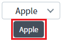
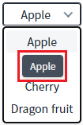
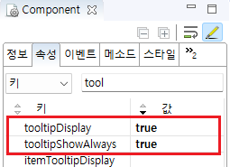
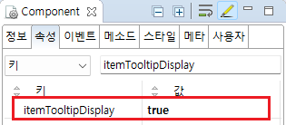

SelectBox의 항목과 선택된 항목에 툴팁을 표시한 예제입니다.
다음은 예제에서 사용한 속성과 설명입니다.
tooltipDisplay : 선택한 값의 툴팁 표시 여부. 선택한 값이 모두 표시되지 않을 때 툴팁이 표시됩니다.
tooltipShowAlways: 선택한 값의 툴팁을 항상 표시할 지의 여부
itemTooltipDisplay : 아이템 항목의 툴팁 표시 여부.
선택된 항목의 툴팁을 항상 표시하기
항목에 툴팁을 표시하기
예제 영역 '선택된 항목의 툴팁을 항상 표시하기'에서 테스트합니다.1
STEP 1: 실행 결과를 확인합니다.
SelectBox 위에 마우스를 올리면 툴팁이 표시되는 것을 확인합니다.
Image 1.브라우저(Chrome) 실행 예시

예제 영역 '항목에 툴팁을 표시하기'에서 테스트합니다.1
STEP 1: SelectBox를 클릭합니다.
2
STEP 2: 실행 결과를 확인합니다.
SelectBox 목록 표시됩니다.
목록의 항목 위에 마우스를 올리면 툴팁이 표시되는 것을 확인합니다.
Image 2.브라우저(Chrome) 실행 예시

1
SelectBox의 속성을 정의합니다.
[필수] tooltipDisplay="true"
[default: false, true] 선택된 값에 대한 툴팁 표시 여부. 선택된 값이 모두 표시되지 않을 때 툴팁이 표시됩니다.
[필수] tooltipShowAlways="true"
[default: false, true] 선택된 값의 툴팁을 항상 표시할 지의 여부
Image 3.웹스퀘어 스튜디오의 Component View - 속성 설정 예시

Example 1.Source
<!-- selectBox 의 소스 본문 예시 --> <xf:select1 tooltipDisplay="true" tooltipShowAlways="true" id="sbx_exam1"> <!-- 중략 --> </xf:select1>
1
SelectBox의 속성을 정의합니다.
[필수] itemTooltipDisplay="true"
[default: false, true] 아이템 목록에 대한 툴팁 표시 여부.
Image 4.웹스퀘어 스튜디오의 Component View - 속성 설정 예시

Example 2.Source
<!-- selectBox 의 소스 본문 예시 --> <xf:select1 itemTooltipDisplay="true" id="sbx_exam1"> <!-- 중략 --> </xf:select1>
tooltipDisplay
tooltipShowAlways
itemTooltipDisplay